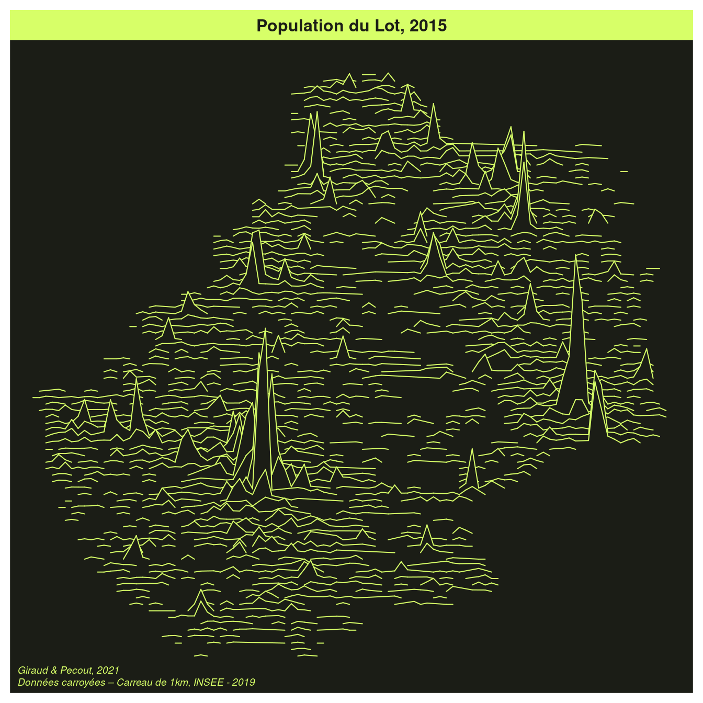

Chapitre 4 Les cartes en 3D
4.1 linemap
Le package linemap (Giraud, 2017) permet de réaliser des cartes composées de lignes.
library(linemap)
library(sf)
library(terra)
library(mapsf)
# import du raster de population
rpop <- rast("data/pop.tif")
# import des communes du Lot
com <- st_read("data/lot46.gpkg", layer = "commune", quiet = TRUE)
com <- st_transform(com, st_crs(rpop))
# découpage selon l'emprise de com
rpop <- trim(mask(rpop, vect(com)))
# transformation en data.frame
pop <- as.data.frame(rpop, xy = TRUE)
pop <- pop[order(pop$y), ]
# cartographie
th <- mf_theme("green")
mf_init(com)
linemap(
x = pop,
var = "Ind",
k = 10,
threshold = 15,
lwd = 1,
col = th$bg,
border = th$fg,
add = TRUE)
mf_title("Population du Lot, 2015")
mf_credits("Giraud & Pecout, 2021\nINSEE, Données carroyées Filosofi 2015")
4.2 Relief Tanaka
Nous utilisons le package tanaka (Giraud, 2020) qui met à disposition une méthode (Tanaka, 1950) utilisée pour améliorer la perception du relief.
library(tanaka)
# import du raster de population
rpop <- rast("data/pop.tif")
# import des communes du Lot
com <- st_read("data/lot46.gpkg", layer = "commune", quiet = TRUE)
com <- st_transform(com, st_crs(rpop))
# lissage du raster
mat <- focalMat(x = rpop, d = c(1500), type = "Gauss")
rpopl <- focal(x = rpop, w = mat, fun = sum, na.rm = TRUE)
rpopl <- raster::raster(rpopl)
# cartographie
col1 <- hcl.colors(8, "Rocket", alpha = .3, rev = T)
col2 <- hcl.colors(8, "Rocket", alpha = 1, rev = T)[-1]
mf_theme("agolalight")
mf_init(com)
tanaka(x = rpopl, breaks = c(0,10,25, 50,100,250,500,750, 1972),
col = col1, light = NA, dark = NA, add = T, legend.pos = "n")
tanaka(x = rpopl, breaks = c(0,10,25,50,100,250,500,786),
col = col2, add = T, mask = com, legend.pos = "n")
mf_legend(type = "choro", pos = "topleft",
val = c(0,10,25,50,100,250,500,786), pal = col2,
bg = "#EDF4F5", fg = NA, frame = T, val_rnd = 0,
title = "Habitants\npar km2")
mf_title("Population lissée du Lot, 2015")
mf_credits("Giraud & Pecout, 2021\nINSEE, Données carroyées Filosofi 2015",
bg = "#EDF4F5")
4.3 rayshader
Le package rayshader (Morgan-Wall, 2018) permet de réaliser de belles cartes en relief.
L’export des images n’est pas évident, il s’agit ici d’une simple capture d’écran.
library(rayshader)
library(rayvista)
zone <- plot_3d_vista(
lat = 44.9320, long = 1.6905, radius = 4000,
zscale = 1.5, phi = 30, theta = 120,
windowsize = c(1000, 600),
baseshape = "circle",
overlay_detail = 15,
elevation_detail = 14,
background = "grey20"
)
png("img/mezels.png", width = 1000, height = 600)
render_camera(zoom = .4)
render_depth(focus = 0.4, focallength = 55, vignette = TRUE)
dev.off()
References
Giraud, T. (2017). linemap: Line Maps. https://CRAN.R-project.org/package=linemap
Giraud, T. (2020). tanaka: Design Shaded Contour Lines (or Tanaka) Maps. https://CRAN.R-project.org/package=tanaka
Morgan-Wall, T. (2018). rayshader: Create and Visualize Hillshaded Maps from Elevation Matrices. https://CRAN.R-project.org/package=rayshader
Tanaka, K. (1950). The Relief Contour Method of Representing Topography on Maps. The Geographical Review, xl(3). https://doi.org/doi:10.2307/211219